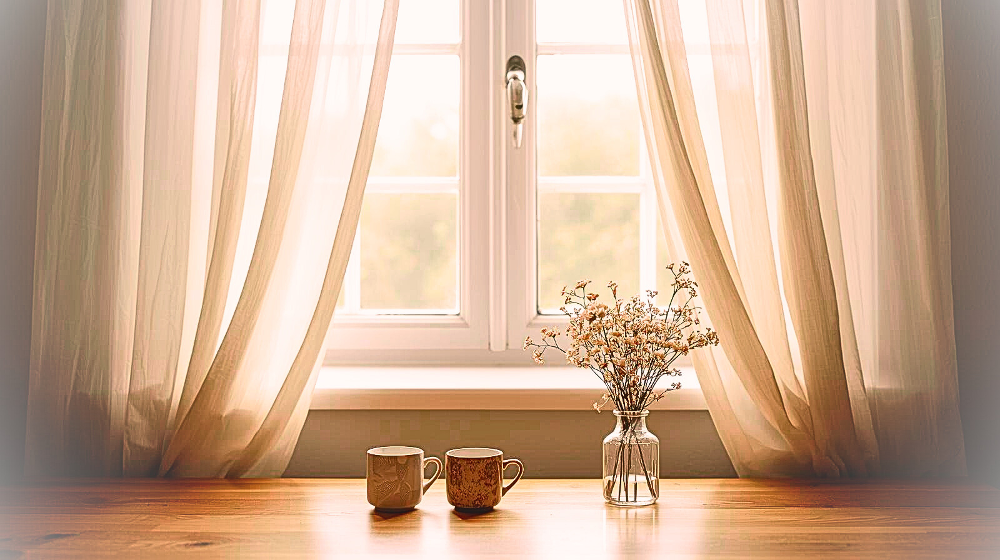

From the Heart of Childhood
Reclaiming Presence for Connection
The future of the world depends on the presence we bring to our children today.
A transformative journey by Julie Lam.

Discover the wisdom that lives within childhood's wonder.
In a world of constant distraction, this book is an invitation to slow down and remember.
Through gentle storytelling and lived insight, Julie Lam guides you from the innocent wonder of childhood to the integrated wisdom of conscious adulthood — back to the authentic self where calm, connection, and clarity naturally unfold.
- a parent ready to soften old patterns
- an educator who longs to honour the whole child
- a leader or healer guiding others toward wholeness
- or anyone yearning to reconnect with your essential nature

From the Heart of Childhood is more than something to read — it is the seed of a living practice. The book gave birth to The Connected Presence Practice, a carefully structured pathway that restores calm, connection, and clarity in community.
When you purchase the book, you'll also receive a free companion workbook — a practical guide to integrate these principles into daily life. The workbook forms the foundation of The Present Parent Practice and other Connected Presence pathways, so your reading naturally becomes preparation for deeper, guided work if you choose.
The doorway stands open.
The light within beckons.
Welcome home.
Decades of real moments.
From the Heart of Childhood grew from decades of real moments — in classrooms, living rooms, and quiet conversations — where Julie witnessed how presence changes everything. What began as an inquiry into how children flourish became a lifelong practice of how we, too, can return to our own wholeness.
For more than four decades, Julie Lam has devoted her life to creating sanctuaries of connection. As founder of Highgate House School in Hong Kong and Knapton Montessori in the UK, her vision of "a warm and gentle welcome" transformed how thousands of families experienced early childhood education.
A mother of four and grandmother of two, Julie has been a voice for children, a mentor to teachers and parents, and the creator of conscious teaching and parenting methods that honour the whole human being.
Through years of walking alongside families, she discovered the quiet power of deep listening and heartfelt speaking. Now, through The Connected Presence Practice, Julie helps others recreate their own sanctuaries of authentic connection.
"Julie's words slowed my heartbeat and reminded me of what truly matters."
"This book met me where I was — overwhelmed — and led me back to calm."